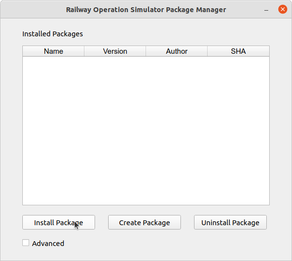
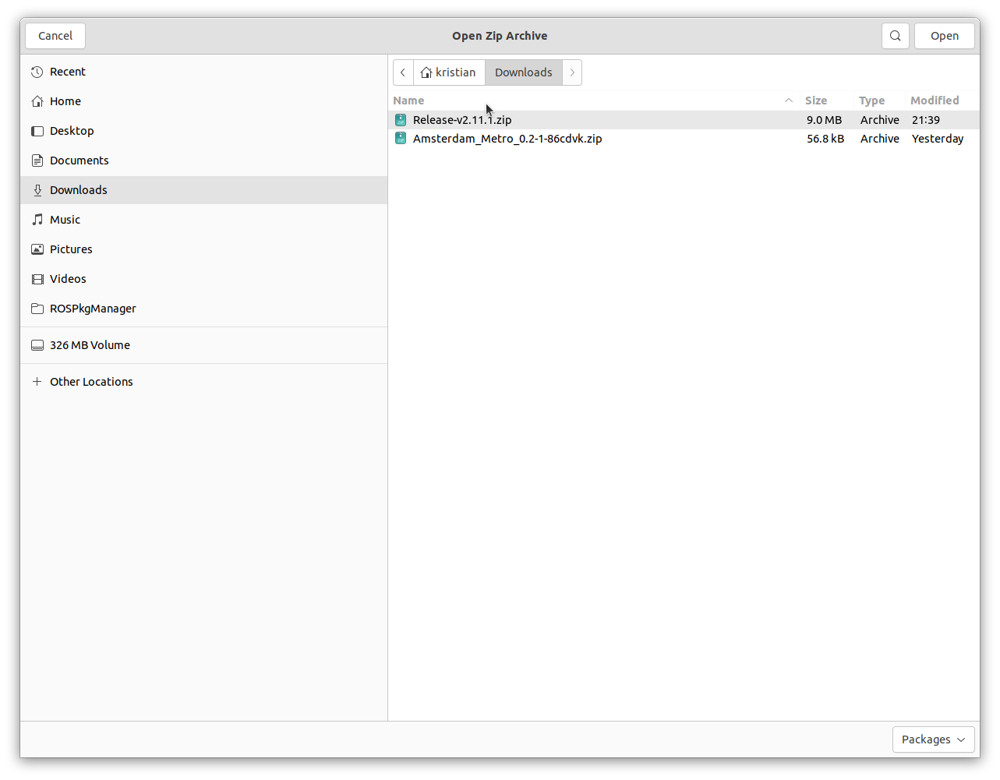
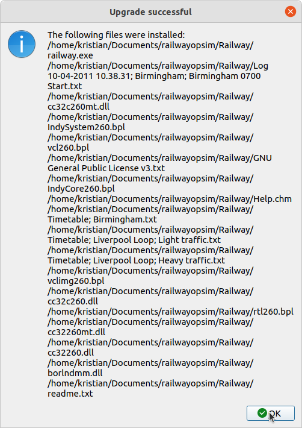

Upgrading Railway Operation Simulator¶
In addition to the installation of add-ons, ROSPkgManager can handle the switching of base program version,
performing a pseudo-upgrade.
If the user specifies a downloaded zip file containing an ROS version (recognised by the presence of a railway.exe file), the program offers to replace the files in the local system installation with the new files. The term "pseudo" refers
to the fact that the program does not recognise one version as newer than another, as such this method can also be used
to perform a downgrade.




This greatly simplifies the process of patching your local version when a new release of ROS is made. Releases for the program are available on the base program download page.